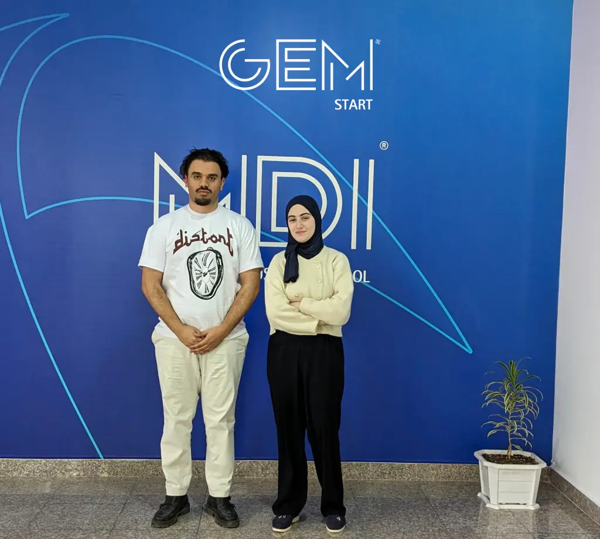
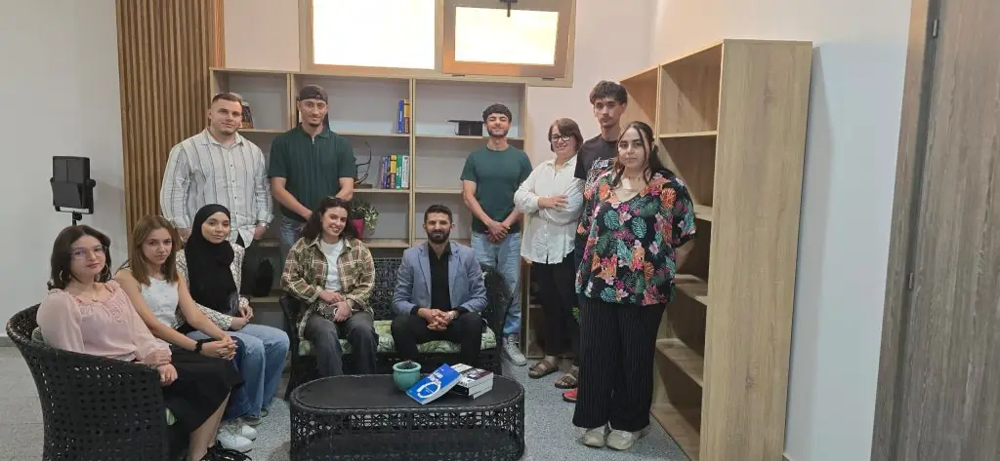

L’idée, le marché et le modèle d’affaires
- Valider l’idée de son projet
- Connaître son marché
- Définir son business model, go / no go
- L’écosystème des start-up
Executive Education
Six mois d’accompagnement personnalisé pour transformer un projet de startup en entreprise, avec l’incubateur GEM-Start.


MDI Executive Education
executive.edu@mdi-alger.com (nouvel onglet)
0560 93 94 17
Le parcours Étudiant-Entrepreneur s’adresse à toutes celles et ceux qui ambitionnent de créer ou de reprendre une entreprise. Il propose une compréhension approfondie des différentes étapes du processus entrepreneurial et accompagne les participants dans la mise en œuvre concrète de leur projet.
Vous avez un goût prononcé pour l’entrepreneuriat ? Vous avez un projet de création ou de reprise d’entreprise ? Vous souhaitez être accompagné par des professionnels de l’entrepreneuriat ? MDI accompagne et soutient les étudiants qui ont pour projet de se lancer dans l’aventure de l’entrepreneuriat et qui sont porteurs de projets innovants.
Le programme développe deux dimensions complémentaires : des compétences transversales (ouverture d’esprit, créativité, curiosité, savoir-être et communication) et des compétences de gestion (analyse de marché, élaboration d’un business model, structuration d’un projet, évaluation et financement d’une activité).
Tout au long du cycle, les apprenants bénéficient d’un accompagnement personnalisé grâce à une pédagogie innovante qui combine séminaires en présentiel et en ligne, participation à des événements dédiés, ainsi qu’un accès privilégié aux espaces de coworking et aux services de l’incubateur GEM-Start, labellisé par le ministère des Start-ups.
Le contenu du parcours privilégie l’apprentissage par l’action et apporte aux jeunes porteurs de projet un encadrement ciblé et personnalisé. Au terme de la période d’accompagnement, qui dure quatre mois, un projet entrepreneurial est présenté devant un jury professionnel.
Certificat étudiant-entrepreneur délivré par MDI.
Présentation du projet (ou de l’idée de projet), CV (parcours de formation et expérience professionnelle), attestation du niveau de formation ou copie des diplômes antérieurs, lettre de motivation, résumé décrivant la nature et l’état d’avancement du projet entrepreneurial ; sont également demandés la copie du dernier diplôme, l’acte de naissance et une photo d’identité.
Présélection sur dossier.
Visant à évaluer l’engagement, la créativité et le potentiel entrepreneurial du candidat.
Frais et conditions de participation : sur demande auprès de MDI Executive Education. Le parcours donne accès aux espaces de coworking et aux services de l’incubateur GEM-Start.
MDI Executive Education : executive.edu@mdi-alger.com (nouvel onglet) · 0560 93 94 17
Cycles certifiants · 6 mois
Former des administrateurs capables de conjuguer performance économique, gouvernance responsable et intégration des critères ESG.
Le programmeCycles certifiants · Environ 20 semaines
Accélérer le développement de leaders à tous les niveaux et maximiser leur potentiel.
Le programmeFormation continue · 2 à 5 jours par formation
Des programmes pratiques pour développer vos compétences.
Le programmeFormation continue
L’efficacité dans le sur-mesure.
Le programmeGEM-Start
GEM-Start, l’incubateur du groupe, a obtenu en 2024 le label officiel « Incubateur ». Il anime les programmes IDÉELAB, BOOSTUP et Entreprendre au féminin, et organise le Startup-Day pour transformer une idée en entreprise.
Le parcours s’inscrit aussi dans la vie du campus : journée Étudiant-Entrepreneur, Hackathon (première édition en 2025 avec i-Yusr et Al Salam Bank) et rencontres avec des dirigeants.

Candidater
Vous avez un projet de création ou de reprise d’entreprise ? Présentez-le à MDI Executive Education : dossier, entretien de motivation, puis six mois d’ateliers, de mentorat et d’accompagnement avec l’incubateur GEM-Start.